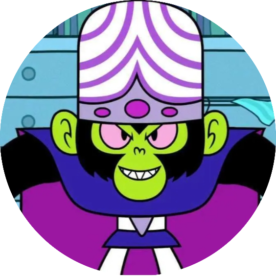
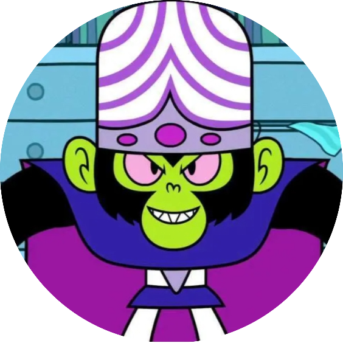
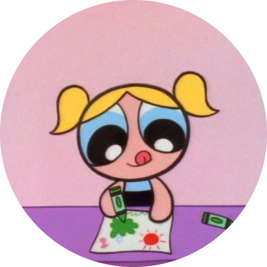
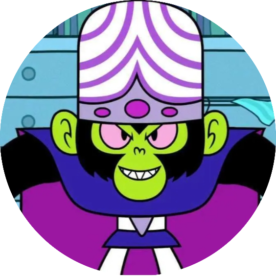

Powerpuff girls
The Powerpuff Girls are a trio of artificially made superhuman kindergartners created by Professor Utonium.
Blossom, The Commander, and the Leader. She often tries to play peacemaker between her two sisters if they yell at each other (she and Buttercup often yell typically). Her special superpower is "Ice Breath".
Bubbles, The Joy and the Laughter. She is portrayed as having blonde hair in two pigtails, blue eyes, and dresses in a blue dress with a black belt. She is the strongest of the group (despite being the same age as her sisters) and is defined by being the cutest. She does, however, have a tendency to be the toughest, leading to her never being regarded, by friends and foes alike, as the group's strongest link, a fact that has led to her never being manipulated by opponents. Her special superpower is the Sonic Scream (although later the other Powerpuff Girls seem to be able to use their own version too).
Buttercup, The Toughest Fighter. She has short black hair in a flip, light green, eyes, and dresses in a light green dress with a black belt. She is the fighter of the Powerpuff Girls. Sometimes, her personality gets the better of her, which sometimes results in her getting in trouble with adults. She possesses a tough, hostile, cynical, stupid, bad, and violent streak not shared by her sisters. It is also revealed that she can fly slightly faster than her sisters, which led to her winning the race, though she claims this only because her hair doesn't keep her back.
Other characters

Watch on YouTube!